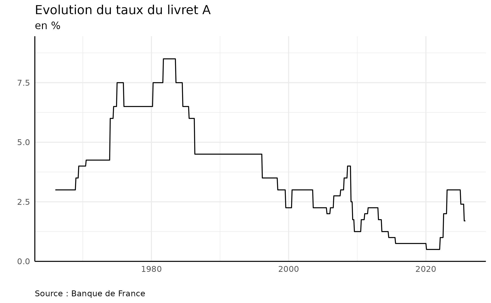

Compte utilisateur
Avant de requêter l’API Banque de France, vous devez créer un compte webstat
Paramétrage
Pour utiliser le package apimisc, il faut
configurer une variable d’environnement WEBSTAT_APIKEY avec
la valeur d’un jeton, à récupérer sur Webstat.
Utilisation
Le package apimisc contient 3 fonctions pour
utiliser l’API BDF :
bdf_get_catalog() pour lister les catalogues ;
bdf_list_datasets() pour interroger un dataset ;
bdf_get_serie() pour télécharger une série.
Exemples
Lister les catalogues de données
library("apimisc")
bdfcat <- bdf_get_catalog()
bdfcat |>
janitor::clean_names() |>
dplyr::select(tidyselect::any_of(c(
"dataset_id",
"model_id",
"description_fr",
"series_count"))) |>
DT::datatable()Obtenir des infos sur un dataset
bdfseriesofc <- bdf_list_datasets(dataset = "OFC")
bdfseriesofc |>
dplyr::select(tidyselect::any_of(c(
"series_key",
"title_fr",
"first_time_period_date",
"last_time_period_date"))) |>
DT::datatable()Télécharger une série
livretA <- bdf_get_serie(key = "MIR1.M.FR.B.L23FRLA.D.R.A.2230U6.EUR.O")
livretA |>
dplyr::select(tidyselect::any_of(c(
"dataset_id",
"title_fr",
"time_period",
"time_period_start",
"time_period_end",
"obs_value",
"obs_status",
"source_agency"))) |>
dplyr::mutate(
time_period_start = as.Date(time_period_start, format = "%Y-%m-%d"),
time_period_end = as.Date(time_period_end, format = "%Y-%m-%d")) |>
dplyr::arrange(desc(time_period_end)) |>
head() |>
DT::datatable()Utiliser une série
library("ggplot2")
livretA |>
dplyr::mutate(
time_period_start = as.Date(time_period_start, format = "%Y-%m-%d"),
time_period_end = as.Date(time_period_end, format = "%Y-%m-%d")) |>
ggplot2::ggplot(ggplot2::aes(x = time_period_start, y = obs_value)) +
ggplot2::geom_line() +
ggplot2::theme_minimal() +
ggplot2::scale_y_continuous(
limits = c(0, 9),
expand = expansion(mult = c(0, 0.05))) +
ggplot2::labs(
title = "Evolution du taux du livret A",
subtitle = "en %",
caption = "Source : Banque de France",
x = "", y = "") +
ggplot2::theme(
axis.line.x = element_line(colour = "black"),
axis.line.y = element_line(colour = "black"),
plot.caption = element_text(hjust = 0))